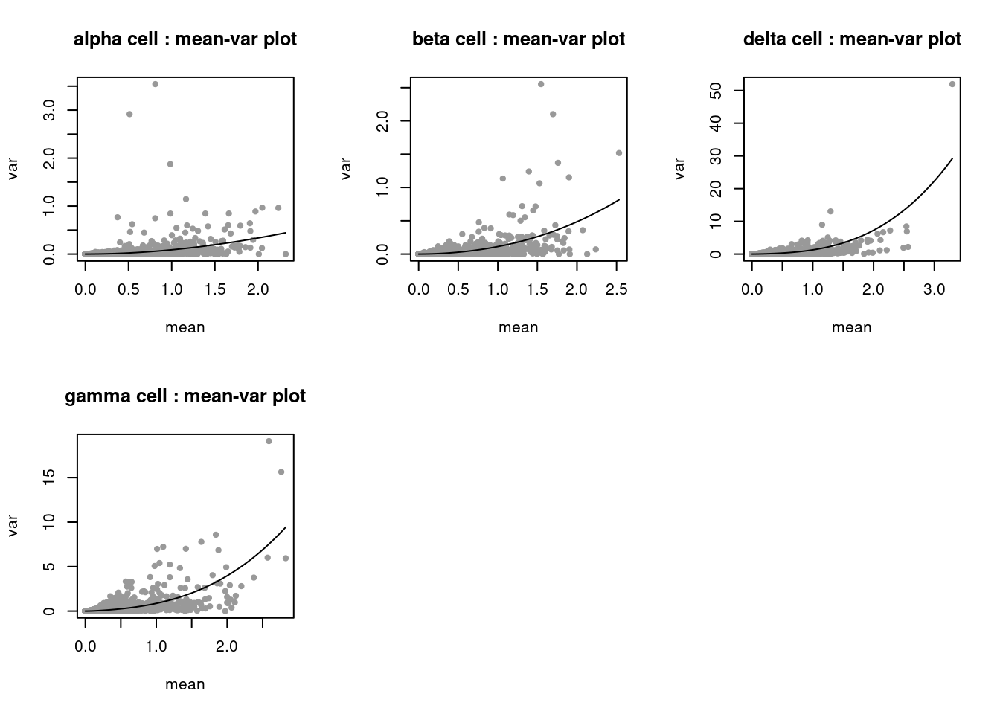
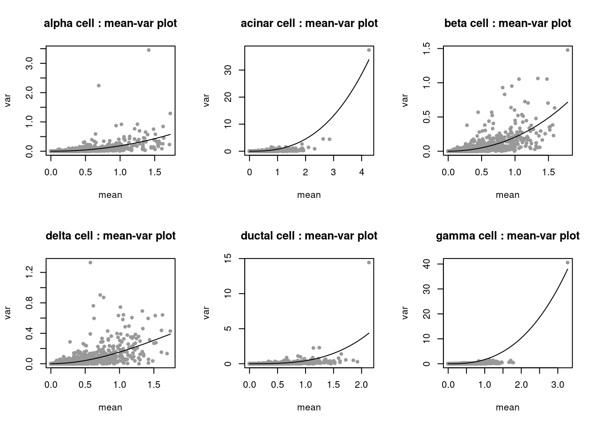
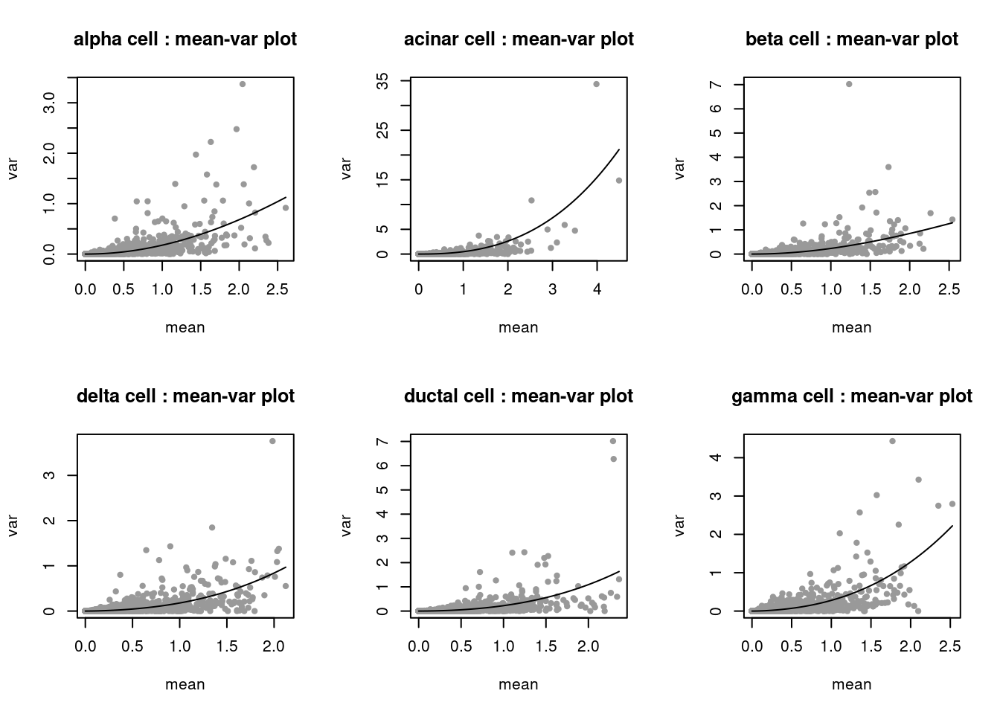

cell size, remove top expressed genes 0.99
DongyueXie
2020-08-25
Last updated: 2020-08-27
Checks: 7 0
Knit directory: deconference/
This reproducible R Markdown analysis was created with workflowr (version 1.6.2). The Checks tab describes the reproducibility checks that were applied when the results were created. The Past versions tab lists the development history.
Great! Since the R Markdown file has been committed to the Git repository, you know the exact version of the code that produced these results.
Great job! The global environment was empty. Objects defined in the global environment can affect the analysis in your R Markdown file in unknown ways. For reproduciblity it’s best to always run the code in an empty environment.
The command set.seed(20200403) was run prior to running the code in the R Markdown file. Setting a seed ensures that any results that rely on randomness, e.g. subsampling or permutations, are reproducible.
Great job! Recording the operating system, R version, and package versions is critical for reproducibility.
Nice! There were no cached chunks for this analysis, so you can be confident that you successfully produced the results during this run.
Great job! Using relative paths to the files within your workflowr project makes it easier to run your code on other machines.
Great! You are using Git for version control. Tracking code development and connecting the code version to the results is critical for reproducibility.
The results in this page were generated with repository version 693ba45. See the Past versions tab to see a history of the changes made to the R Markdown and HTML files.
Note that you need to be careful to ensure that all relevant files for the analysis have been committed to Git prior to generating the results (you can use wflow_publish or wflow_git_commit). workflowr only checks the R Markdown file, but you know if there are other scripts or data files that it depends on. Below is the status of the Git repository when the results were generated:
Ignored files:
Ignored: .Rhistory
Ignored: .Rproj.user/
Ignored: analysis/figure/
Untracked files:
Untracked: Xin_universal.RData
Untracked: Xin_universal_hc3.RData
Untracked: analysis/cellsize3.Rmd
Untracked: analysis/meta_mode.Rmd
Untracked: analysis/multiIndNormal.Rmd
Untracked: analysis/plotGeneVar.Rmd
Untracked: data/EMTAB5061Segerstolpe/
Untracked: data/GSE129788/
Untracked: data/GSE141115/
Untracked: data/GSE81547Enge/
Untracked: data/GSE81608Xin/
Untracked: data/GSE84133Baron/
Untracked: data/GSE85241Muraro/
Untracked: data/MuSiC/
Untracked: data/cibersort/
Untracked: data/pbmc3k/
Untracked: data/robots.txt
Untracked: output/Xin_bycelltype_hc2.RData
Untracked: output/Xin_bycelltype_hc3.RData
Untracked: output/Xin_sampleM_hc2.RData
Untracked: output/Xin_sampleM_hc3.RData
Untracked: output/Xin_sampleM_unadj.RData
Untracked: output/Xin_universal_hc0.RData
Untracked: output/Xin_universal_hc2.RData
Untracked: output/Xin_universal_hc3.RData
Untracked: output/bulkref_pbmc_allgene_refls05_bulkls50.RData
Untracked: output/bulkref_pbmc_allgene_refls10_bulkls50.RData
Untracked: output/bulkref_pbmc_allgene_refls1_bulkls50.RData
Untracked: output/bulkref_pbmc_allgene_refls3_bulkls50.RData
Untracked: output/bulkref_pbmc_allgene_refls50_bulkls50.RData
Untracked: output/bulkref_pbmc_allgene_refls5_bulkls50.RData
Untracked: output/bulkref_pbmc_fewgene_refls05_bulkls50.RData
Untracked: output/bulkref_pbmc_fewgene_refls10_bulkls50.RData
Untracked: output/bulkref_pbmc_fewgene_refls1_bulkls50.RData
Untracked: output/bulkref_pbmc_fewgene_refls3_bulkls50.RData
Untracked: output/bulkref_pbmc_fewgene_refls50_bulkls50.RData
Untracked: output/bulkref_pbmc_fewgene_refls5_bulkls50.RData
Untracked: output/bulkref_pbmc_markergene_refls05_bulkls50.RData
Untracked: output/bulkref_pbmc_markergene_refls10_bulkls50.RData
Untracked: output/bulkref_pbmc_markergene_refls1_bulkls50.RData
Untracked: output/bulkref_pbmc_markergene_refls3_bulkls50.RData
Untracked: output/bulkref_pbmc_markergene_refls50_bulkls50.RData
Untracked: output/bulkref_pbmc_markergene_refls5_bulkls50.RData
Untracked: output/bulkref_simu_G1000_K4_refls05_bulkls50.RData
Untracked: output/bulkref_simu_G1000_K4_refls10_bulkls50.RData
Untracked: output/bulkref_simu_G1000_K4_refls1_bulkls50.RData
Untracked: output/bulkref_simu_G1000_K4_refls3_bulkls50.RData
Untracked: output/bulkref_simu_G1000_K4_refls50_bulkls50.RData
Untracked: output/bulkref_simu_G1000_K4_refls5_bulkls50.RData
Untracked: output/bulkref_simu_addw_G1000_K4_refls10_bulkls50.RData
Untracked: output/bulkref_simu_addw_G1000_K4_refls1_bulkls50.RData
Untracked: output/bulkref_simu_addw_G1000_K4_refls3_bulkls50.RData
Untracked: output/bulkref_simu_addw_G1000_K4_refls5_bulkls50.RData
Untracked: output/bulkref_simu_correction_G1000_K4_refls05_bulkls50.RData
Untracked: output/bulkref_simu_correction_G1000_K4_refls1_bulkls50.RData
Untracked: output/bulkref_simu_correction_G1000_K4_refls3_bulkls50.RData
Untracked: output/bulkref_simu_correction_addw_G1000_K4_refls1_bulkls50.RData
Untracked: output/bulkref_simu_correction_addw_G1000_K4_refls3_bulkls50.RData
Untracked: output/results_nsclc.RData
Untracked: output/scref_multiInd100_simu_G500_K4_scls02_scN100_bulkls50_addw_tauunknown.RData
Untracked: output/scref_multiInd100_simu_G500_K4_scls02_scN100_bulkls50_addw_tauunknown_Nosigma2.RData
Untracked: output/scref_multiInd10_simu_G500_K4_scls02_scN100_bulkls50_addw_tauunknown.RData
Untracked: output/scref_multiInd10_simu_G500_K4_scls02_scN100_bulkls50_addw_tauunknown_Nosigma2.RData
Untracked: output/scref_simu_G1000_K4_scls01_scN10_bulkls50.RData
Untracked: output/scref_simu_G1000_K4_scls01_scN10_bulkls50_addw_tauunknown.RData
Untracked: output/scref_simu_G1000_K4_scls01_scN300_bulkls50_addw_tauunknown.RData
Untracked: output/scref_simu_G1000_K4_scls01_scN30_bulkls50.RData
Untracked: output/scref_simu_G1000_K4_scls01_scN30_bulkls50_addw_tauunknown.RData
Untracked: output/scref_simu_G1000_K4_scls02_scN10_bulkls50.RData
Untracked: output/scref_simu_G1000_K4_scls02_scN10_bulkls50_addw_tauunknown.RData
Untracked: output/scref_simu_G1000_K4_scls02_scN300_bulkls50_addw_tauunknown.RData
Untracked: output/scref_simu_G1000_K4_scls02_scN30_bulkls50.RData
Untracked: output/scref_simu_G1000_K4_scls02_scN30_bulkls50_addw_tauunknown.RData
Untracked: output/scref_simu_G1000_K4_scls05_scN10_bulkls50.RData
Untracked: output/scref_simu_G1000_K4_scls05_scN10_bulkls50_addw_tauunknown.RData
Untracked: output/scref_simu_G1000_K4_scls05_scN300_bulkls50_addw_tauunknown.RData
Untracked: output/scref_simu_G1000_K4_scls05_scN30_bulkls50.RData
Untracked: output/scref_simu_G1000_K4_scls05_scN30_bulkls50_addw_tauunknown.RData
Untracked: output/twoBulk_bulkref_simu_G1000_K4_refls30.RData
Untracked: output/twoBulk_bulkref_simu_G500_K4_refls30.RData
Untracked: output/twoBulk_multiscref_simu_G1000_K4.RData
Untracked: output/twoBulk_null_bulkref_simu_G1000_K4_refls30.RData
Untracked: output/twoBulk_null_multiscref_simu_G1000_K4.RData
Untracked: output/twoBulk_null_scref_simu_G1000_K4.RData
Untracked: output/twoBulk_scref_simu_G1000_K4.RData
Unstaged changes:
Modified: analysis/cellsize.Rmd
Modified: analysis/real_data_simu.Rmd
Modified: code/deconference_meta.R
Modified: code/deconference_setdata.R
Deleted: data/pbmc.rds
Note that any generated files, e.g. HTML, png, CSS, etc., are not included in this status report because it is ok for generated content to have uncommitted changes.
These are the previous versions of the repository in which changes were made to the R Markdown (analysis/cellsize2.Rmd) and HTML (docs/cellsize2.html) files. If you’ve configured a remote Git repository (see ?wflow_git_remote), click on the hyperlinks in the table below to view the files as they were in that past version.
| File | Version | Author | Date | Message |
|---|---|---|---|---|
| Rmd | 693ba45 | DongyueXie | 2020-08-27 | wflow_publish(“analysis/cellsize2.Rmd”) |
Introduction
Explore the difference of cell sizes of UMI/non-UMI methods.
Xin: rpkm and raw counts available
segerstope: rpkm and raw counts available
muraro: Transcript counts were then adjusted to the expected number of molecules based on counts, 256 possible UMI’s and poissonian counting statistics.
baron: raw counts
Enge: smart-seq2, raw counts avaiable
library(MuSiC)
library(xbioc)
library(MASS)
source('code/deconference_main.R')
xin_raw <- readRDS("data/GSE81608Xin/xin_raw.rds")
xin_rpkm <- readRDS("data/GSE81608Xin/xin_rpkm.rds")
segerstolpe_raw <- readRDS("data/EMTAB5061Segerstolpe/segerstolpe_raw.rds")
segerstolpe_rpkm <- readRDS("data/EMTAB5061Segerstolpe/segerstolpe_rpkm.rds")
enge_raw <- readRDS('data/GSE81547Enge/gse/enge_raw.rds')
muraro <- readRDS("data/GSE85241Muraro/muraro_expected.rds")
baron <- readRDS("data/GSE84133Baron/baron_raw.rds")
GSE50244bulkeset <- readRDS("data/MuSiC/GSE50244bulkeset.rds")
genes <- read.csv("data/GSE81547Enge/hca/genes.csv")
# common genes
common_genes = intersect(intersect(rownames(exprs(xin_raw)), rownames(segerstolpe_raw)), intersect(unlist(lapply(strsplit(rownames(muraro),split='__'),function(z){z[1]})), rownames(baron)))
common_genes = intersect(rownames(enge_raw),common_genes)
common_genes = (intersect(rownames(GSE50244bulkeset),common_genes))
common_genes = intersect(common_genes,genes$featurename)
common_cells = c('alpha','acinar','beta','delta','ductal','gamma')
length(common_genes)[1] 15374gene_length = (genes$featureend-genes$featurestart)[match(common_genes,genes$featurename)]
plott = function(out){
par(mfrow=c(3,2))
for(k in 1:6){
if(!is.nan(out$S[k])){
plot(out$X[,k]*1e3,out$Sigma[,k]*1e6,
pch=20,col='grey60',
xlab='mean',ylab='var',
main=paste(common_cells[k],"cell : mean-var plot"))
loess_fit = loess(y~.,
data.frame(x=out$X[,k]*1e3,y=out$Sigma[,k]*1e6))
x_seq = seq(range(out$X[,k]*1e3)[1],range(out$X[,k]*1e3)[2],length.out = 1e3)
lines(x_seq,predict(loess_fit,data.frame(x=x_seq)))
}
}
}baron data set
baron_gene = match(common_genes,rownames(baron))
baron_data = set_data_decon(rep(1,length(baron_gene)),counts(baron)[baron_gene,],
cell_type_idx=baron$cell_type1,
indi_idx = baron$human,
cell_types=common_cells)
out_baron = scRef_multi_proc(baron_data$Y,baron_data$cell_type_idx,baron_data$indi_idx,
est_sigma2=F,cell_types = baron_data$cell_types,diag_cov=TRUE)
round(out_baron$S_glm,2) alpha acinar beta delta ductal gamma
1.00 1.51 1.04 0.87 1.39 0.83 round(out_baron$S,2) alpha acinar beta delta ductal gamma
1.00 1.52 1.05 0.87 1.40 0.83 plott(out_baron)plot.new()
muraro data set
muraro_gene = match(common_genes,unlist(lapply(strsplit(rownames(muraro),split='__'),function(z){z[1]})))
muraro_data = set_data_decon(rep(1,length(muraro_gene)),normcounts(muraro)[muraro_gene,],
cell_type_idx=muraro$cell_type1,
indi_idx = muraro$donor,
cell_types=common_cells,max_count_quantile = 0.99)
out_muraro = scRef_multi_proc(muraro_data$Y,muraro_data$cell_type_idx,muraro_data$indi_idx,
est_sigma2=F,cell_types = muraro_data$cell_types,diag_cov=TRUE)
round(out_muraro$S_glm,2) alpha acinar beta delta ductal gamma
1.00 1.55 1.37 0.91 1.53 0.64 round(out_muraro$S,2) alpha acinar beta delta ductal gamma
1.00 1.58 1.42 0.90 1.46 0.62 plot.new()
Xin data set
Use raw counts:
xin_gene = match(common_genes,rownames(exprs(xin_raw)))
xin_cell = which(xin_raw$cellType%in%common_cells)
datax = set_data_decon(rep(1,length(xin_gene)),exprs(xin_raw)[xin_gene,],
cell_type_idx = xin_raw$cellType,
indi_idx = xin_raw$SubjectName,cell_types = common_cells)
out_xin = scRef_multi_proc(datax$Y,datax$cell_type_idx,datax$indi_idx,
est_sigma2=F,cell_types = datax$cell_types,diag_cov=TRUE)
round(out_xin$S_glm,2) alpha acinar beta delta ductal gamma
1.00 NaN 1.37 1.19 NaN 0.96 round(out_xin$S,2) alpha acinar beta delta ductal gamma
1.00 NaN 1.35 1.19 NaN 0.98 Use raw counts adjusted by gene length:
xin_gene2 = match(common_genes,rownames(normcounts(xin_rpkm)))
xin_cell2 = which(xin_rpkm$cell_type1%in%common_cells)
datax = set_data_decon(rep(1,length(xin_gene)),
t(t(normcounts(xin_rpkm)[xin_gene2,xin_cell2]*1e-6)*c(colSums(exprs(xin_raw)[xin_gene,xin_cell]))),
cell_type_idx = xin_rpkm$cell_type1[xin_cell2],
indi_idx = xin_rpkm$donor.id[xin_cell2],cell_types = common_cells)
out_xin2 = scRef_multi_proc(datax$Y,datax$cell_type_idx,datax$indi_idx,
est_sigma2=F,cell_types = datax$cell_types,diag_cov=TRUE)
round(out_xin2$S_glm,2) alpha acinar beta delta ductal gamma
1.00 NaN 1.39 1.32 NaN 1.04 round(out_xin2$S,2) alpha acinar beta delta ductal gamma
1.00 NaN 1.35 1.32 NaN 1.06 plott(out_xin2)
plot.new()Use raw counts adjusted by gene length - external gene length data
datax = set_data_decon(rep(1,length(xin_gene)),exprs(xin_raw)[xin_gene,]/gene_length*1e3,
cell_type_idx = xin_raw$cellType,
indi_idx = xin_raw$SubjectName,cell_types = common_cells)
out_xin3 = scRef_multi_proc(datax$Y,datax$cell_type_idx,datax$indi_idx,
est_sigma2=F,cell_types = datax$cell_types,diag_cov=TRUE)
round(out_xin3$S_glm,2) alpha acinar beta delta ductal gamma
1.00 NaN 1.31 1.15 NaN 0.92 round(out_xin3$S,2) alpha acinar beta delta ductal gamma
1.00 NaN 1.29 1.15 NaN 0.95 plott(out_xin3)
plot.new()
segerstolpe data
raw counts:
segerstolpe_raw_gene = match(common_genes,unlist(lapply(strsplit(rownames(segerstolpe_raw),split='__'),function(z){z[1]})))
# segerstolpe_raw_cell = which(segerstolpe_raw$cell_type1%in%common_cells)
datax = set_data_decon(rep(1,length(segerstolpe_raw_gene)),
counts(segerstolpe_raw)[segerstolpe_raw_gene,],
cell_type_idx=segerstolpe_raw$cell_type1,
indi_idx = segerstolpe_raw$age,
cell_types=common_cells,max_count_quantile = 0.99)
out_segerstolpe_raw = scRef_multi_proc(datax$Y,datax$cell_type_idx,datax$indi_idx,
est_sigma2=F,cell_types = datax$cell_types,diag_cov=TRUE)
round(out_segerstolpe_raw$S_glm,2) alpha acinar beta delta ductal gamma
1.00 1.18 0.93 0.87 1.53 0.86 round(out_segerstolpe_raw$S,2) alpha acinar beta delta ductal gamma
1.00 1.27 0.95 0.86 1.49 0.76 Use raw counts adjusted by gene length:
datax = set_data_decon(rep(1,length(segerstolpe_raw_gene)),
t(t(normcounts(segerstolpe_rpkm)[segerstolpe_raw_gene,]*1e-6)*c(colSums(counts(segerstolpe_raw)[segerstolpe_raw_gene,]))),
cell_type_idx=segerstolpe_raw$cell_type1,
indi_idx = segerstolpe_raw$age,
cell_types=common_cells,max_count_quantile = 0.99)
out_segerstolpe2 = scRef_multi_proc(datax$Y,datax$cell_type_idx,datax$indi_idx,
est_sigma2=F,cell_types = datax$cell_types,diag_cov=TRUE)
round(out_segerstolpe2$S_glm,2) alpha acinar beta delta ductal gamma
1.00 1.17 0.82 0.83 1.49 0.81 round(out_segerstolpe2$S,2) alpha acinar beta delta ductal gamma
1.00 1.26 0.83 0.81 1.44 0.71 plott(out_segerstolpe2)
plot.new()
Use raw counts adjusted by gene length - external gene length data
datax = set_data_decon(rep(1,length(segerstolpe_raw_gene)),
counts(segerstolpe_raw)[segerstolpe_raw_gene,]/gene_length,
cell_type_idx=segerstolpe_raw$cell_type1,
indi_idx = segerstolpe_raw$age,
cell_types=common_cells,max_count_quantile = 0.99)
out_segerstolpe3 = scRef_multi_proc(datax$Y,datax$cell_type_idx,datax$indi_idx,
est_sigma2=F,cell_types = datax$cell_types,diag_cov=TRUE)
round(out_segerstolpe3$S_glm,2) alpha acinar beta delta ductal gamma
1.00 1.33 0.92 0.83 1.51 0.71 round(out_segerstolpe3$S,2) alpha acinar beta delta ductal gamma
1.00 1.34 0.92 0.83 1.51 0.71 plott(out_segerstolpe3)
plot.new()
Enge data set
raw
enge_gene = match(common_genes,rownames(enge_raw))
#enge_cell = which(enge_raw$inferred_cell_type.ch1%in%common_cells)
datax = set_data_decon(rep(1,length(enge_gene)),
counts(enge_raw)[enge_gene,],
cell_type_idx=enge_raw$inferred_cell_type.ch1,
indi_idx = enge_raw$characteristics_ch1,
cell_types=common_cells,max_count_quantile = 0.99)
out_enge_raw = scRef_multi_proc(datax$Y,datax$cell_type_idx,datax$indi_idx,
est_sigma2=F,cell_types = datax$cell_types,diag_cov=TRUE)
round(out_enge_raw$S_glm,2) alpha acinar beta delta ductal gamma
1.00 0.48 0.99 1.00 1.32 NaN round(out_enge_raw$S,2) alpha acinar beta delta ductal gamma
1.00 0.47 0.98 1.01 1.34 NaN Use raw counts adjusted by gene length - external gene length data
datax = set_data_decon(rep(1,length(enge_gene)),
counts(enge_raw)[enge_gene,]/gene_length,
cell_type_idx=enge_raw$inferred_cell_type.ch1,
indi_idx = enge_raw$characteristics_ch1,
cell_types=common_cells,max_count_quantile = 0.99)
out_enge2 = scRef_multi_proc(datax$Y,datax$cell_type_idx,datax$indi_idx,
est_sigma2=F,cell_types = datax$cell_types,diag_cov=TRUE)
round(out_enge2$S_glm,2) alpha acinar beta delta ductal gamma
1.00 0.51 0.98 0.97 1.35 NaN round(out_enge2$S,2) alpha acinar beta delta ductal gamma
1.00 0.51 0.98 0.97 1.36 NaN plott(out_enge2)
plot.new()Compare
S_all = rbind(out_baron$S,out_muraro$S,
out_xin$S,out_xin2$S,out_xin3$S,
out_segerstolpe_raw$S,out_segerstolpe2$S,out_segerstolpe3$S,
out_enge_raw$S,out_enge2$S)
rownames(S_all) = c('baron','muraro',
'xin_raw','xin/genelen-rpkm','xin/genelen-ext',
'segerstolpe_raw','segerstolpe/genelen-rpkm','segerstolpe/genelen-ext',
'enge_raw','enge/genelen-ext')
S_all = round(S_all,2)
knitr::kable(S_all,caption = 'ols estimates')| alpha | acinar | beta | delta | ductal | gamma | |
|---|---|---|---|---|---|---|
| baron | 1 | 1.52 | 1.05 | 0.87 | 1.40 | 0.83 |
| muraro | 1 | 1.58 | 1.42 | 0.90 | 1.46 | 0.62 |
| xin_raw | 1 | NaN | 1.35 | 1.19 | NaN | 0.98 |
| xin/genelen-rpkm | 1 | NaN | 1.35 | 1.32 | NaN | 1.06 |
| xin/genelen-ext | 1 | NaN | 1.29 | 1.15 | NaN | 0.95 |
| segerstolpe_raw | 1 | 1.27 | 0.95 | 0.86 | 1.49 | 0.76 |
| segerstolpe/genelen-rpkm | 1 | 1.26 | 0.83 | 0.81 | 1.44 | 0.71 |
| segerstolpe/genelen-ext | 1 | 1.34 | 0.92 | 0.83 | 1.51 | 0.71 |
| enge_raw | 1 | 0.47 | 0.98 | 1.01 | 1.34 | NaN |
| enge/genelen-ext | 1 | 0.51 | 0.98 | 0.97 | 1.36 | NaN |
S_all = rbind(out_baron$S_glm,out_muraro$S_glm,
out_xin$S_glm,out_xin2$S_glm,out_xin3$S_glm,
out_segerstolpe_raw$S_glm,out_segerstolpe2$S_glm,out_segerstolpe3$S_glm,
out_enge_raw$S_glm,out_enge2$S_glm)
rownames(S_all) = c('baron','muraro',
'xin_raw','xin/genelen-rpkm','xin/genelen-ext',
'segerstolpe_raw','segerstolpe/genelen-rpkm','segerstolpe/genelen-ext',
'enge_raw','enge/genelen-ext')
S_all = round(S_all,2)
knitr::kable(S_all,caption = 'glm estimates')| alpha | acinar | beta | delta | ductal | gamma | |
|---|---|---|---|---|---|---|
| baron | 1 | 1.51 | 1.04 | 0.87 | 1.39 | 0.83 |
| muraro | 1 | 1.55 | 1.37 | 0.91 | 1.53 | 0.64 |
| xin_raw | 1 | NaN | 1.37 | 1.19 | NaN | 0.96 |
| xin/genelen-rpkm | 1 | NaN | 1.39 | 1.32 | NaN | 1.04 |
| xin/genelen-ext | 1 | NaN | 1.31 | 1.15 | NaN | 0.92 |
| segerstolpe_raw | 1 | 1.18 | 0.93 | 0.87 | 1.53 | 0.86 |
| segerstolpe/genelen-rpkm | 1 | 1.17 | 0.82 | 0.83 | 1.49 | 0.81 |
| segerstolpe/genelen-ext | 1 | 1.33 | 0.92 | 0.83 | 1.51 | 0.71 |
| enge_raw | 1 | 0.48 | 0.99 | 1.00 | 1.32 | NaN |
| enge/genelen-ext | 1 | 0.51 | 0.98 | 0.97 | 1.35 | NaN |
combine cell size
combine baron, muraro, (xin, seger, enge) - ext
S_mat = rbind(out_baron$S_mat,out_muraro$S_mat,out_xin3$S_mat,out_segerstolpe3$S_mat,out_enge2$S_mat)
S = colMeans(S_mat,na.rm = TRUE)
S = S/S[1]
# ## method 2: glm
#
S_mat_dataframe = data.frame(y = c(S_mat),
indi = factor(rep(1:nrow(S_mat),ncol(S_mat))),
type = factor(rep(common_cells,each = nrow(S_mat)),levels = common_cells))
fit = MASS::glm.nb(y~.,S_mat_dataframe)
S_glm = S
S_glm[which(!is.nan(S))] = c(1,exp(fit$coefficients[-c(1:nrow(S_mat))]))
names(S_glm) = common_cells
round(S_mat,2) alpha acinar beta delta ductal gamma
1 2722 3103 2581 2260 3520 2006
2 2137 3965 2352 1923 3137 1792
3 1963 2705 1941 1586 2595 1800
4 2677 4704 3103 2504 4059 2262
D28 15360 23852 26477 11758 18688 8882
D29 8515 8802 9802 6875 15550 5788
D30 11793 22474 15582 12151 15927 5800
D31 7795 13703 9993 8267 13493 6571
Non T2D 1 14431 NA 17269 19896 NA 14652
Non T2D 2 32022 NA 25368 20204 NA 22679
Non T2D 3 13034 NA 17325 17189 NA 9370
Non T2D 4 14513 NA 22908 NA NA 17615
Non T2D 5 27621 NA 33778 38644 NA 27185
Non T2D 6 20973 NA 23910 28640 NA 3574
Non T2D 7 17006 NA 24565 NA NA 17135
Non T2D 8 11620 NA 21736 20931 NA 13609
Non T2D 9 12566 NA 20701 3614 NA 19278
Non T2D 10 15516 NA 18447 14344 NA NA
Non T2D 11 13384 NA 19328 15407 NA 7025
Non T2D 12 18823 NA 25958 13334 NA NA
T2D 1 20112 NA 26789 19039 NA 19317
T2D 2 24637 NA 28038 29710 NA 22726
T2D 3 13000 NA 19389 19882 NA 13882
T2D 4 19235 NA 26880 25400 NA 30770
T2D 5 15284 NA 16431 20575 NA 12344
T2D 6 14624 NA 20930 17894 NA 17717
22 7 7 5 6 17 2
23 9 15 12 9 15 8
25 24 35 26 20 39 16
27 8 5 5 3 9 14
37 18 31 9 20 27 11
43 34 47 23 20 28 12
48 9 15 11 12 16 9
52 5 5 5 5 7 4
55 9 9 10 8 13 9
57 23 26 28 18 49 18
donor_age: 1 15 5 19 16 9 NA
donor_age: 21 16 5 13 18 23 NA
donor_age: 22 9 5 8 8 15 NA
donor_age: 38 16 8 13 23 36 NA
donor_age: 44 24 12 23 22 26 NA
donor_age: 5 24 9 23 15 28 NA
donor_age: 54 13 10 9 12 17 NA
donor_age: 6 12 12 18 11 NA NA round(S,2) alpha acinar beta delta ductal gamma
1.00 0.38 1.30 1.05 0.37 1.06 round(S_glm,2) alpha acinar beta delta ductal gamma
1.00 1.33 1.19 1.02 1.60 0.82
sessionInfo()R version 3.5.1 (2018-07-02)
Platform: x86_64-pc-linux-gnu (64-bit)
Running under: Scientific Linux 7.4 (Nitrogen)
Matrix products: default
BLAS/LAPACK: /software/openblas-0.2.19-el7-x86_64/lib/libopenblas_haswellp-r0.2.19.so
locale:
[1] LC_CTYPE=en_US.UTF-8 LC_NUMERIC=C
[3] LC_TIME=en_US.UTF-8 LC_COLLATE=en_US.UTF-8
[5] LC_MONETARY=en_US.UTF-8 LC_MESSAGES=en_US.UTF-8
[7] LC_PAPER=en_US.UTF-8 LC_NAME=C
[9] LC_ADDRESS=C LC_TELEPHONE=C
[11] LC_MEASUREMENT=en_US.UTF-8 LC_IDENTIFICATION=C
attached base packages:
[1] stats4 parallel stats graphics grDevices utils datasets
[8] methods base
other attached packages:
[1] SingleCellExperiment_1.4.0 SummarizedExperiment_1.12.0
[3] DelayedArray_0.8.0 BiocParallel_1.16.0
[5] matrixStats_0.54.0 GenomicRanges_1.34.0
[7] GenomeInfoDb_1.18.1 MASS_7.3-51.1
[9] xbioc_0.1.18 AnnotationDbi_1.44.0
[11] IRanges_2.16.0 S4Vectors_0.20.1
[13] Biobase_2.42.0 BiocGenerics_0.28.0
[15] MuSiC_0.1.1 ggplot2_3.1.1
[17] nnls_1.4
loaded via a namespace (and not attached):
[1] bit64_0.9-7 assertthat_0.2.0 highr_0.7
[4] BiocManager_1.30.10 blob_1.1.1 GenomeInfoDbData_1.2.0
[7] yaml_2.2.0 pillar_1.3.1 RSQLite_2.1.1
[10] backports_1.1.2 lattice_0.20-38 quantreg_5.36
[13] glue_1.3.0 digest_0.6.18 promises_1.0.1
[16] XVector_0.22.0 colorspace_1.3-2 htmltools_0.3.6
[19] httpuv_1.4.5 Matrix_1.2-15 plyr_1.8.4
[22] pkgconfig_2.0.2 bibtex_0.4.2 SparseM_1.78
[25] zlibbioc_1.28.0 purrr_0.3.2 xtable_1.8-3
[28] scales_1.0.0 whisker_0.3-2 later_0.7.5
[31] MatrixModels_0.4-1 git2r_0.26.1 tibble_2.1.1
[34] pkgmaker_0.27 withr_2.1.2 lazyeval_0.2.1
[37] magrittr_1.5 crayon_1.3.4 memoise_1.1.0
[40] mcmc_0.9-7 evaluate_0.12 fs_1.3.1
[43] tools_3.5.1 registry_0.5 stringr_1.3.1
[46] MCMCpack_1.4-4 munsell_0.5.0 compiler_3.5.1
[49] rlang_0.4.0 grid_3.5.1 RCurl_1.95-4.11
[52] bitops_1.0-6 rmarkdown_1.10 gtable_0.2.0
[55] codetools_0.2-15 DBI_1.0.0 reshape2_1.4.3
[58] R6_2.3.0 knitr_1.20 dplyr_0.8.0.1
[61] bit_1.1-14 workflowr_1.6.2 rprojroot_1.3-2
[64] stringi_1.2.4 Rcpp_1.0.4.6 tidyselect_0.2.5
[67] coda_0.19-2